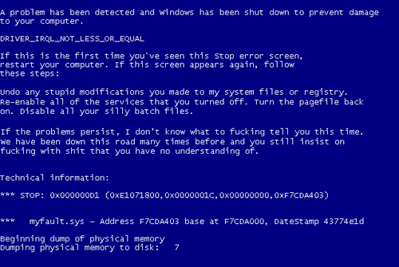

Algo bastante más complicado de resolver es cuando la computadora se niega a cargar el sistema operativo y aparece una pantalla azul con un mensaje de error. Esto es debido a la acción de programas nocivos que han perjudicado tu sistema operativo. Estos programas perjudiciales logran tener acceso a tu computadora a través de “resquicios” en programas que tengas instalados o bien en el mismo sistema operativo. Para eliminar estos programas y arreglar tu computador, examina tu disco duro con un programa anti-virus compatible.
 PASOS